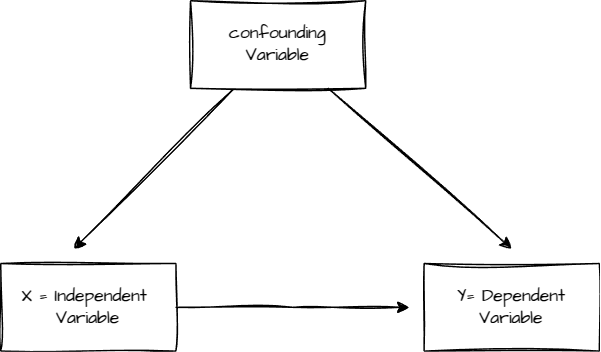

Dissecting research projects
Activity aims
In this activity, you will have to work in groups. The goal is to analyze and answer questions based on possible research study cases.
After analyzing each case, one group member will explain the information discuss. Don’t feel bad if your team does not know the answer. You can say “I don’t know”, this will all help us to construct knowledge together.
Submit your answers on Canvas for 10 extra points today.
Case 1
- It is well known the relationship between physical activity and cognition. However, Jessica has some problems. She doesn’t know how to delimit her research project. In a desperate attempt to define a topic she believes there is a causal relationship between vigourous physical activity and attention. This sounded like a good idea for Jessica. But, how can she make sure there is really a causal relationship?
Answer the following questions:
1.1 What is the independent, and dependent variable in Jessica’s idea?
1.2 Is there a confounding variable between the independent and dependent variable? It could be more than one confounding variable.

1.3 How would you evaluate the relationship between physical activity and attention? Propose an experiment with at least two measurements overtime. Also, remember that Jessica is making an important CAUSAL claim.
1.4 How would you execute your idea in the context of our Seminar at CSU Stan? Is it possible to adapt your idea to make it work in our course?
Case 2
- Political affiliation or political values are important constructs in social psychology. However, political values and beliefs can also change overtime. Mario has a task in mind. He wants to understand how political values change overtime. Mario found an article that suggests that political views do change overtime. He has the following research hypothesis in mind:
- \(H_{1}\): People will change their political views overtime. Older people will be more conservative compare to themselves when they were younger.
Mario also found theory about the political spectrum that suggests that there is a Cartesian plane of political tendencies. You may read it here: CLICK HERE. Mario also found an instrument that he could use in this study: CLICK HERE
Finally, Mario thinks that somehow personality is related to this change overtime. Mario found an instrument based on the Big Five personality theory. You may read about it here: CLICK HERE..
You can also see some articles found by Mario:
Personality correlates of party preference: The Big Five in five big European countries
Answer the following questions:
2.1. What is the null hypothesis in Mario’s research project?
2.2. How would you study the relationship of personality and political spectrum overtime?
2.3 Write a hypothesis or several hypothesis linking the Big Five personality theory and changes in political views.
2.4 Add any other variable that could be related to the change of political views overtime.
Case 3
- Download the article The Development of the College Teaching Self-Efficacy Scale. Then answer the following questions.
3.1 After briefly glancing the article. Are you able to detect the independent and dependent variables? if so, can you describe them?
3.2 What is the aim of the authors in this article?
3.3 Why creating a new instrument is important according to to authors?
Case 4
- Download the article Formal Education Level Versus Self-Rated Literacy as Predictors of Cognitive Aging. Then answer the following questions:
4.1 What are the independent and dependent variables?
4.2 What is the aim of the study?
4.3 Did the authors analyze secondary data? If so, what was the name of the survey?
When researchers get access to data that they did not collect, but are able to obtain to do statistical analysis. Frequently, studies with secondary data will access data from large surveys sponsored by public institutions such as NIH, NSF, and similar large institutions.
4.4 Would you be able to conduct a similar study in this course?